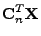
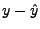
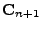
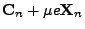

|  | |||
|  | |||
|  |  |
The rate of convergence of the filter and the computational cost are both dependent on the length of the room model echo path. Because the speed of sound is relatively slow, we will need a fairly long filter. This rules out RLS as a possible algorithm. LMS is still a possibility, but because of the long filter and the high degree of self correlation in speech, we should not expect this algorithm to perform very well. There is a class of algorithms which are a generalization of LMS known as Affine Projection Algorithms (APA) [OU]. These algorithms converge much quicker than LMS. Unfortunately, APA is still too slow, but there are a number of fast versions of the algorithm (FAP) [GT]. The one I have implemented, uses Gauss-Seidel iterations to approximate the inverse of the correlation matrix [AKCF]. For low projection orders, it is not too much slower than LMS.
As we will see later, it will be necessary to have multiple copies of the algorithm running at once. To keep the amount of computation manageable, we will use a block exact form of the algorithm (BEFAP) [TMK]. The block form only updates the filter once in a while. This decreases the amount of computation, but the filter converges slower. The block exact form is exactly equivalent to the orignal algorithm (except for numerical effects), but it still results in a faster algorithm. The cost is a delay equal to the block size. We want to keep delays as short as possible. So there is some trade off between the amount of tolerable delay and the amount of computation.